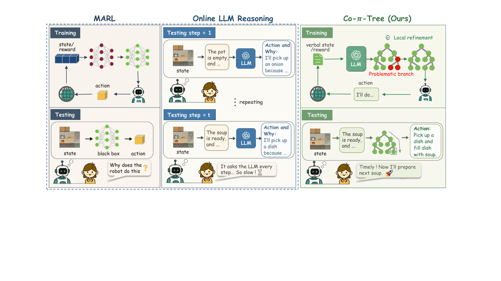

Predict the partner
A partner-behavior tree estimates what the teammate is likely to do from a readable scene state.
Human-AI Collaboration · Overcooked-AI · Interpretable Policies
Co-π-tree distills LLM coordination reasoning into executable policy trees: fast enough for real-time collaboration, and explicit enough for branch-level inspection and refinement.
Sun Yat-sen University
* Equal contribution. † Corresponding author.
average reward over the baseline average
LLM queries during policy use
test-time latency
TL;DR
Multi-agent reinforcement learning can produce strong but opaque policies, while online LLM agents are slow and expensive. Co-π-tree sits between those extremes: it asks an LLM to construct interpretable policy-tree code, evaluates that code with partners in Overcooked-AI, and uses natural language feedback to repair problematic branches.
A partner-behavior tree estimates what the teammate is likely to do from a readable scene state.
An action-selection tree chooses the controlled agent's next action conditioned on that prediction.
Execution traces expose failed predictions or inefficient actions, then reflection revises local branches.

Motivation
MARL policies execute quickly but hide their reasoning inside neural parameters. Online LLM agents expose language reasoning, but repeated model calls are too slow for smooth collaboration. Co-π-tree uses LLMs while learning and refinement happen, then deploys the final policy tree directly during interaction.

Method
A planner first generates a partner-behavior prediction tree and then an
agent-action selection tree. A coder translates both into executable Python
while preserving explicit if/elif decision branches.
Raw Overcooked-AI states are converted into textual semantic fields that expose task progress, object status, and partner behavior. The executor maps high-level tree actions to feasible movement and interaction commands.
Candidate policies are evaluated through partner interaction. If a branch causes poor coordination, a summarizer turns the trace into localized reflection so the next planner call can revise that branch without changing unrelated behavior.
Demo Videos
These slots are ready for the videos you will add later. Put the files in
assets/videos/ with the names shown in each placeholder, and the
page will automatically show them.
Compact layout requiring quick role specialization and handoff.
Longer-horizon movement coordination around a shared workspace.
Partners benefit from distinct regions and complementary sub-tasks.
Counter placements create bottlenecks that reward readable intent.
Separated work areas make collaboration unavoidable.
A placeholder for the human-AI interaction video.
Environment
Each episode lasts 400 environment steps. We evaluate zero-shot collaboration across cramped room, coordination ring, counter circuit, asymmetric advantages, and forced coordination layouts, covering bottlenecks, role specialization, handoffs, and separated work areas.

Results
Co-π-tree is evaluated against MARL, imitation, and LLM-based baselines, including SP, PBT, FCP, MEP, COLE, BC, ProAgent, and CausalPlan. It improves reward across both AI-partner and human-partner settings while removing repeated online LLM calls after the final tree is learned.
Outperforms all baselines in 8 of 10 layout-role settings and improves average reward by 35.4%.
Obtains the highest mean reward on all five human-study layouts among the full method and ablations.
Once the policy tree is produced, additional evaluations do not require extra LLM queries.


Citation
@misc{zhang2026copitree,
title = {Distilling LLM Reasoning into an Interpretable Policy Tree for Human-AI Collaboration},
author = {Beiwen Zhang and Yongheng Liang and Guowei Zou and Haitao Wang and Hejun Wu},
year = {2026},
note = {Preprint}
}